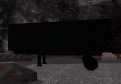
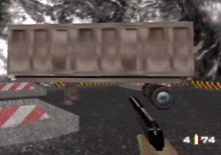

Grace à l'Action Replay, on peut faire apparaitre divers Véhicules qui ne figurent pas dans la Version Finale. Et y en a un bon Paquet !! Il vous suffit de rentrer un Code, et le Véhicule apparaitra à la Place du Camion Vert du Barrage ! Voilà le Code de Base : 801E8D37 00YY et 801E8D39 00XX. Il vous suffit de remplacer les XX et les YY par les Chiffres que je donne !
Hélicoptère de Natalya (YY = 28 / XX = 1A)
Il n'est pas Noir comme à la Fin de Cradle, mais Vert, et on peut voir Natalya dedans !


Camion Rouge (YY = 28 / XX = 19)


Semi-Remorque Noire (YY = 2F / XX = 1E)
Le moins interessant des Véhicules, juste une Semi-Remorque. Elle est TOUTE Noire, et quand on met le Code "Pas d'Ombres" on voit que c'est en fait celle que l'on retrouve dans le Dépot !


Hélicoptère de Jungle (YY = 28 / XX = 1D)
Un bon, très bon truc cet Hélicoptère. Déjà, il a de la Gueule non ? Peut-etre qu'on le voyait dans la Jungle, avec Xenia qui en descendait ?
Véhicule Blindé (YY = 07 / XX = 21)
Pas d'Indices pour ce Truc !


Bateau Vert (YY = 2F / XX = 22)
Pour ça, allez voir la Section Ile du Barrage. Ce Bateau devait FORCEMENT servir à y aller.


Moto (YY = 07 / XX = 1F)
Cette Moto devait etre dans Runway, comme dans le Film, pour attraper l'Avion. Mais conduire cette Moto en meme temps que jouer aurait peut-etre été trop dur alors elle fut virée.

Voiture d'Oroumov (YY = 28 / XX = 31)
Il est plus qu'évident que l'on devait trouver cette Voiture dans Streets, comme dans le Film. On peut faire apparaitre la Voiture, mais aussi la faire avancer ! Voilà le Code ! Si vous voulez que la Voiture avance, enlevez la Première Ligne ! La Voiture suivra le même Chemin que le Camion.
801E8D37 0028 801E8D39 0031 801E8D34 0003
Jeep (YY = 27 / XX = 18)
Ceci n'est PAS un Véhicule Beta, mais lorsque l'on met le Code, la Jeep bouge. On pense qu'elle était dans Streets, en train de courser Bond dans son Tank. C'est marrant, mais le Niveau Streets avait l'air plus excitant dans la Version Beta !